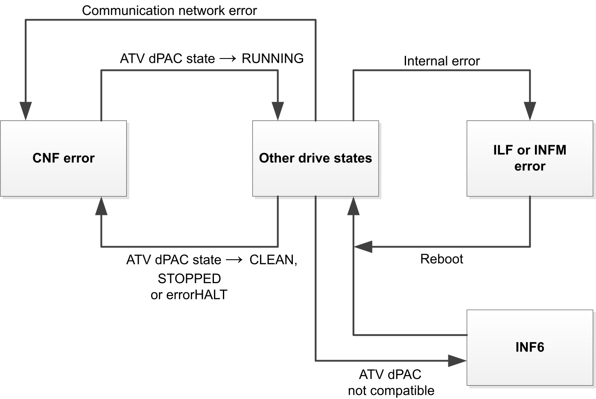

This chapter describes the specific behavior related to the ATV Distributed PAC operating modes. The part common to EcoStruxure Automation Expert controller offer is described in the ‘Operating Modes’ chapter in the EcoStruxureTM Automation Expert Reference Guide.

The drive operating mode machine is different from the ATV Distributed PAC operating mode machine. With ATV Distributed PAC, the drive continues to follow its operating state machine.
The drive remains in Operating State Fault [Fieldbus Com Interrupt] (CnF) if ATV Distributed PAC is in the operating mode CLEAN, STOPPED or errorHALT. The drive switches from this state when ATV Distributed PAC is in operating mode RUNNING.
If a communication network error is detected by the ATV Distributed PAC, ATV Distributed PAC switches to errorHALT operating mode and [Fieldbus Com Interrupt] (CnF) is triggered by the drive.
If an internal error is detected, [Internal Link Error] (ILF)or [Internal Error 22] (InFM)is triggered by the drive depending on the error.
In case of [Internal Error 6] (InF6), the ATV Distributed PAC is not supported by the firmware of the drive. Verify the version compatibility.
For more information on the drive errors, refer to the drive Programming Manual.